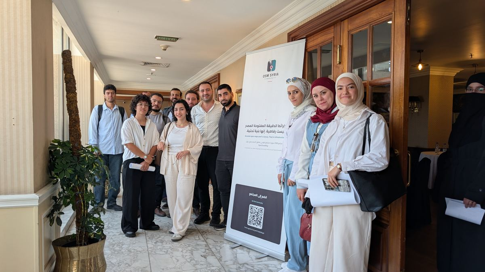

انضم إلى المجتمع
لا يشترط وجود خبرة مسبقة، والدعوة مفتوحة للجميع.
مجتمع OpenStreetMap سوريا (OSM Syria) مجتمع تطوعي للخرائط المفتوحة، مبني حول OpenStreetMap: الخريطة الحرّة القابلة للتعديل للعالم كله.
انطلق المجتمع في كانون الأول 2024، بعد التغيير السياسي في سوريا، ليجمع السوريين داخل البلاد وخارجها ممن يهتمون بالخرائط والتقنيات مفتوحة المصدر حول هدف واحد: سدّ فجوات البيانات الجغرافية في سوريا.
خلال 2026 نظّمنا سلسلة ماباثونات ضمن مشروع إعادة رسم خريطة سوريا (ReMapping Syria) ومنحة بناء مجتمع OSM في سوريا، جمعت خبراء GIS وأشخاصاً يفتحون الخريطة لأول مرة في مكان واحد.
لا تراتبية ولا ألقاب بيننا، والجميع متساوون في المهام والنشاط والمشاركة والتنظيم.

العدد الإجمالي لتسجيلات الأعضاء في المجتمع منذ نيسان 2025.
224تسجيلاً حتى الآنارتفاعاً من 74 في نيسان 2025
| الشهر | عدد التسجيلات |
|---|---|
| نيسان 2025 | 74 |
| أيار 2025 | 127 |
| حزيران 2025 | 128 |
| تموز 2025 | 130 |
| أيلول 2025 | 134 |
| تشرين الأول 2025 | 136 |
| تشرين الثاني 2025 | 138 |
| كانون الأول 2025 | 146 |
| كانون الثاني 2026 | 167 |
| شباط 2026 | 199 |
| آذار 2026 | 201 |
| أيار 2026 | 207 |
| حزيران 2026 | 214 |
| تموز 2026 | 217 |
| آب 2026 | 218 |
| أيلول 2026 | 224 |
| تشرين الأول 2026 (حتى 15 تشرين الأول) | 224 |
«المشاريع لها تواريخ نهاية، لكن المجتمعات مستمرة. أهم ما رسمناه لم يكن المباني ولا الطرق… بل الثقة.»من مقال «أكثر من مجرد خرائط» على موقع HOT
أنشطة وتدريب مجاني يقوم على وقت المتطوعين وجهدهم.
لا ألقاب، والجميع متساوون في المهام والتنظيم.
نشجّع الأسئلة، ونتقبّل الأخطاء، ونحتفل بالتعلّم.
توثيق أنشطتنا واجتماعاتنا عام ومفتوح للجميع.
لا يشترط وجود خبرة مسبقة، والدعوة مفتوحة للجميع.